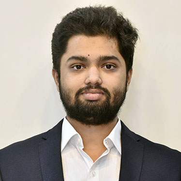
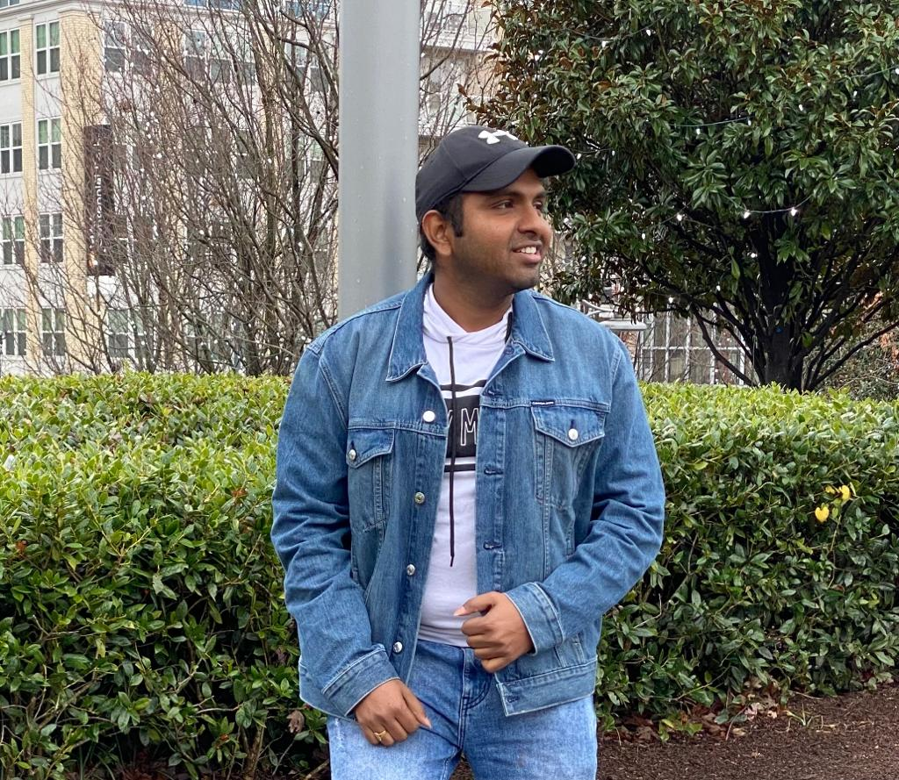
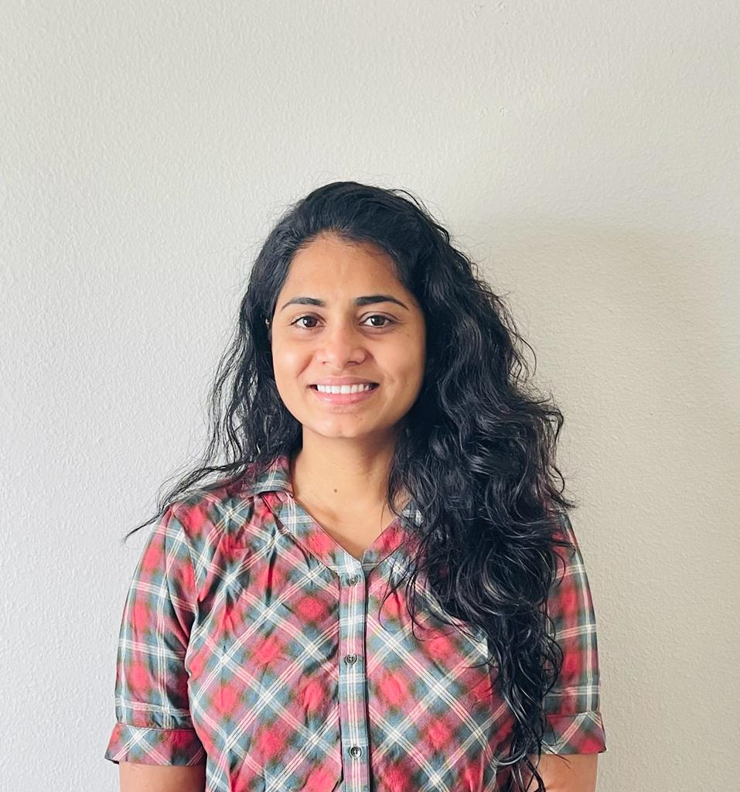
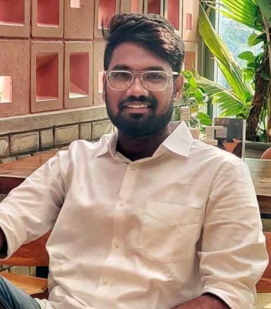

About US
Gnana Abhishek Boga
A Data Analyst with up to 3 years of hands-on experience supporting business solutions and Analyzing
operations. Expertise in programming with Python, R, and SQL for more than two years of working on
different projects. Experience in using Data Mining and Machine learning algorithms like (Linear
Regression, Decision Trees, Neural Networks, and SVM) to create models based on business needs. I am
also a professional photographer with a part time experience of 2 yrs and have proficiency in
fashion and nature photography.

Uma Shankar Santhosh
I am Uma Sankar Santhosh Koramutla, pursuing master’s in BAIS at USF. Previously I worked as a business
analyst at TCS, Hyderabad for 2.5 years.With more than 2 years of experience in the field of analytics,
I love to deal with data and solve business problems. My long term goal is to have a startup that
provides business solutions to companies from diversified industries.

ManasaVeena Sudini
I am ManasaVeena Sudini pursuing masters in BAIS at USF. I worked as a full stack developer in India,
Hyderabad around 5 years. To extend my knowledge in data field I have taken Buisness Analytics &
Information System in masters. Gained lot of knowlege by taking this course and used this knowledge
extensively in my internship as a Data engineer.

Vivek Reddy Gurrala
Iam Vivek Reddy Gurrala persuing MS BAIS at USF , I had 1 year of experience in Network Monitoring
Engineer at Sensen.ai Hyderabad,
My aim is to become a Data engineer, watching movies is my free time hobbie.
